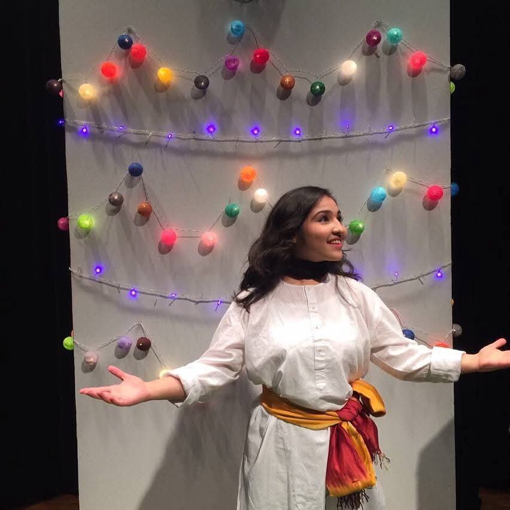

Destination story videos
Turn local legends, food stories, heritage sites and cultural traditions into stories that invite travellers to look closer.
Beautiful locations attract attention. Stories create connection. Let travellers discover the legends, history, culture and people that make your destination its own.
Create a story for your audience
Gauraangi exploring a heritage destination
Turn local legends, food stories, heritage sites and cultural traditions into stories that invite travellers to look closer.
Introduce your destination before arrival. Share stories that build curiosity and give families a starting point for exploration.
Bring a destination’s tales to life through performance, character and shared audience experiences.
Discuss how your story can be used across visitor communications, digital channels and on-site experiences.
Tell us the destination, the travellers you want to reach, the story material available and where the finished experience will be used.

A local legend. A family tradition. An overlooked landmark. A person keeping a craft alive. We start with the material that makes your destination distinctive and shape the story around your audience.
Explore the storytelling experienceTell us the destination, the travellers you want to reach, the story material available and where the finished experience will be used.
Let’s create your story